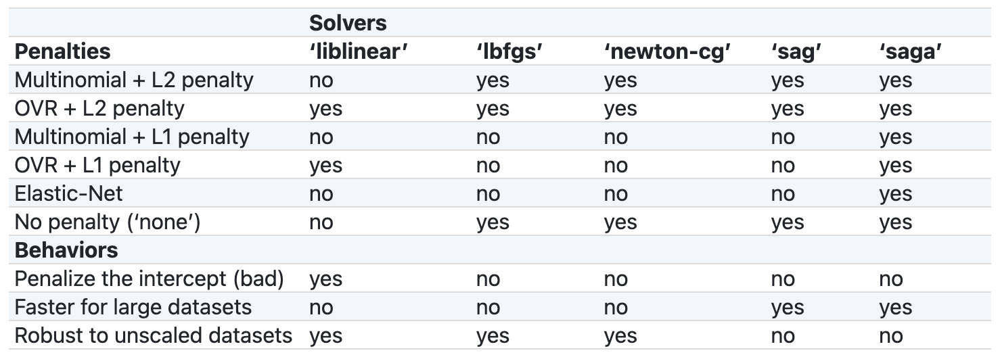

import pandas as pd
df = pd.read_csv('http://bit.ly/MLtrain', nrows=10)2 Review of the Machine Learning workflow
2.1 Loading and exploring a dataset
In this chapter, we’re going to do a quick review of the basic Machine Learning workflow, from loading and exploring a dataset to building and evaluating a model, and then finally using that model to making predictions.
We’ll start by importing the pandas library and then using its read_csv function to read a dataset directly from a URL.
We specified that only the first 10 rows should be read in. We’ll work with the entire dataset later in the book, but by starting with just 10 rows, we can more easily examine the input and output of each step.
Let’s print out these 10 rows.
This is the famous Titanic dataset. There’s a lot we can learn by working with this dataset because it contains a diversity of feature types, lots of missing values, and other problems we’ll need to solve.
The Titanic ship sank in 1912, and each row in this dataset represents one passenger. Some of the passengers survived, represented by a 1 in the Survived column, whereas others did not, represented by a 0.
df| Survived | Pclass | Name | Sex | Age | SibSp | Parch | Ticket | Fare | Cabin | Embarked | |
|---|---|---|---|---|---|---|---|---|---|---|---|
| 0 | 0 | 3 | Braund, Mr. Owen Harris | male | 22.0 | 1 | 0 | A/5 21171 | 7.2500 | NaN | S |
| 1 | 1 | 1 | Cumings, Mrs. John Bradley (Florence Briggs Th... | female | 38.0 | 1 | 0 | PC 17599 | 71.2833 | C85 | C |
| 2 | 1 | 3 | Heikkinen, Miss. Laina | female | 26.0 | 0 | 0 | STON/O2. 3101282 | 7.9250 | NaN | S |
| 3 | 1 | 1 | Futrelle, Mrs. Jacques Heath (Lily May Peel) | female | 35.0 | 1 | 0 | 113803 | 53.1000 | C123 | S |
| 4 | 0 | 3 | Allen, Mr. William Henry | male | 35.0 | 0 | 0 | 373450 | 8.0500 | NaN | S |
| 5 | 0 | 3 | Moran, Mr. James | male | NaN | 0 | 0 | 330877 | 8.4583 | NaN | Q |
| 6 | 0 | 1 | McCarthy, Mr. Timothy J | male | 54.0 | 0 | 0 | 17463 | 51.8625 | E46 | S |
| 7 | 0 | 3 | Palsson, Master. Gosta Leonard | male | 2.0 | 3 | 1 | 349909 | 21.0750 | NaN | S |
| 8 | 1 | 3 | Johnson, Mrs. Oscar W (Elisabeth Vilhelmina Berg) | female | 27.0 | 0 | 2 | 347742 | 11.1333 | NaN | S |
| 9 | 1 | 2 | Nasser, Mrs. Nicholas (Adele Achem) | female | 14.0 | 1 | 0 | 237736 | 30.0708 | NaN | C |
Let’s review some basic terminology:
- The Survived column is the target column, which is what we are trying to predict.
- The target column is categorical, and thus this is a classification problem. More specifically, it’s called binary classification because there are only two classes, 0 and 1.
- All other columns are possible features, meaning inputs to the model.
- Each row is known as a sample or observation, and represents a passenger. At the moment, we have 10 samples.
- And this is known as our training data because we know the actual target values.
Next, let’s select some features. There are many valid methods for feature selection, such as:
- Human intuition, meaning what makes sense as a feature
- Domain knowledge, meaning what you know because of your expertise in that field
- Data exploration, meaning relationships in the data that you discover
- And finally, there are automated methods that we’ll cover later in the book.
To start, we’re going to use intuition and start with Parch and Fare as our features:
- Parch is the number of parents or children aboard with that passenger. Our intuition is that families may have gotten priority access to lifeboats, and thus Parch may be predictive of who survived, which is our target.
- Fare is the amount the passenger paid. Our intuition is that people who paid more may have gotten priority access to lifeboats, and again it may be predictive of our target.
As you can see above, both Parch and Fare are numeric features.
Let’s now define our X and our y:
- X is the feature matrix, and we’ll use double brackets to select those two columns as a DataFrame.
- y is the target, and we’ll use single brackets to select this column as a Series.
X = df[['Parch', 'Fare']]
X| Parch | Fare | |
|---|---|---|
| 0 | 0 | 7.2500 |
| 1 | 0 | 71.2833 |
| 2 | 0 | 7.9250 |
| 3 | 0 | 53.1000 |
| 4 | 0 | 8.0500 |
| 5 | 0 | 8.4583 |
| 6 | 0 | 51.8625 |
| 7 | 1 | 21.0750 |
| 8 | 2 | 11.1333 |
| 9 | 0 | 30.0708 |
y = df['Survived']
y0 0
1 1
2 1
3 1
4 0
5 0
6 0
7 0
8 1
9 1
Name: Survived, dtype: int64Object shape is important in scikit-learn, and so we’ll check the shapes of both X and y:
- X is a pandas DataFrame with 2 columns, thus it has 2 dimensions.
- y is a pandas Series, thus it has 1 dimension.
By convention, you use an uppercase “X” because it has 2 dimensions, and you use a lowercase “y” because it has 1 dimension.
X.shape(10, 2)y.shape(10,)2.2 Building and evaluating a model
Now that we’ve defined X and y, our next step is to build and evaluate a model.
To start, we’re going to use logistic regression as our model. It’s a good default choice for classification problems because it’s both fast and interpretable.
We import it from the linear_model module, and then we create an instance called logreg. This is our model object.
The default solver for logistic regression has changed between different scikit-learn versions, but in this book I’m going to set the solver to liblinear. I’m specifying the solver explicitly and setting a value for random_state so that if you run the same code at home, you will most likely get the same results as me.
from sklearn.linear_model import LogisticRegression
logreg = LogisticRegression(solver='liblinear', random_state=1)Let’s now talk about model evaluation. The goal of model evaluation is to simulate how a model will perform on future data so that we can choose between models today. To do model evaluation, we need both an evaluation procedure and an evaluation metric.
The procedure we will use is K-fold cross-validation. Another option is to use train/test split, but cross-validation is generally superior because it gives a lower variance estimate of model performance.
The metric we will use is classification accuracy. There are many other classification metrics we could have chosen, but accuracy is suitable for this problem for two reasons:
- First, there is not significant class imbalance.
- And second, predicting the positive class correctly is just as important to us as predicting the negative class correctly.
That being said, I will cover other classification metrics in the chapters on class imbalance.
With such a small dataset, we’re going to use 3-fold cross-validation, rather than 5 or 10 folds which is more typical. Let me briefly review what happens during 3-fold cross-validation:
- The rows are split into 3 subsets, which we’ll call A, B, and C.
- First, A and B together become the training set, and C becomes the testing set. The model is trained on the training set, the trained model makes predictions for the testing set, and those predictions are evaluated.
- Next, A and C together become the training set, and B becomes the testing set. Again, the model is trained, it makes predictions, and the predictions are evaluated.
- Finally, B and C together become the training set, and A becomes the testing set. The training, predicting, and evaluation process happens one final time.
- Because the evaluation process occurred 3 times, it returns 3 scores, and we will usually take the mean of those scores.
Let’s go ahead and use cross-validation to evaluate our model:
- First we import the cross_val_score function from the model_selection module.
- Then we pass it the model object, X and y, the number of cross-validation folds, and the evaluation metric. Although the default metric for classification problems is accuracy, I recommend specifying it explicitly so that there’s no ambiguity.
- When we run cross_val_score, it does the dataset splitting, training, predicting, and evaluation. 3 accuracy scores are returned, and the mean of those scores is 69%.
from sklearn.model_selection import cross_val_score
cross_val_score(logreg, X, y, cv=3, scoring='accuracy').mean()0.6944444444444443If you received a different result, that’s not a problem. The results can vary based on your scikit-learn version due to changes in the default parameters, algorithm changes, bug fixes, and so on.
Unfortunately, we can’t take these results seriously because the dataset is so small. There’s actually no reliable evaluation procedure when your training data only contains 10 rows, but I did want to demonstrate it anyway to emphasize that model evaluation is a normal part of the Machine Learning workflow.
2.3 Using the model to make predictions
At this point in the workflow, we would typically try making changes in order to achieve a better accuracy, such as:
- Tuning the the model’s hyperparameters
- Adding or removing features
- Or trying a different classification model other than logistic regression.
We’ll cover these topics in detail later in the book, but for now, let’s assume that we’re happy with the model as-is. Thus, our next steps are to train the model and then use it to make predictions on new data.
We use the model’s fit method, which instructs the model to try to learn the relationship between X and y.
logreg.fit(X, y)LogisticRegression(random_state=1, solver='liblinear')There are four important points I want to note here:
- First, you should train your model on the entire dataset before using it to make predictions, otherwise you are throwing away valuable training data. In truth, we do have more than 10 rows, but for now we are considering our entire training dataset to be these 10 rows.
- Second, the model object is modified in-place when you run the fit method, and so there’s no need to overwrite the logreg object using an assignment statement.
- Third, scikit-learn understands how to work with pandas objects, and so we can pass X and y directly to the fit method.
- And finally, if you’re using scikit-learn 0.23 or later, you will only see the parameters that have changed from the defaults when you print or fit a model. That’s why it only displays the random_state and solver parameters, whereas in previous versions of scikit-learn, all model parameters would have been displayed.
Now, let’s read in a new dataset for which we don’t know the target values. Again, we are only going to keep the first 10 rows.
You’ll notice that it has the same columns as the df DataFrame, except that there’s no Survived column, which is the column that we’re going to predict.
df_new = pd.read_csv('http://bit.ly/MLnewdata', nrows=10)
df_new| Pclass | Name | Sex | Age | SibSp | Parch | Ticket | Fare | Cabin | Embarked | |
|---|---|---|---|---|---|---|---|---|---|---|
| 0 | 3 | Kelly, Mr. James | male | 34.5 | 0 | 0 | 330911 | 7.8292 | NaN | Q |
| 1 | 3 | Wilkes, Mrs. James (Ellen Needs) | female | 47.0 | 1 | 0 | 363272 | 7.0000 | NaN | S |
| 2 | 2 | Myles, Mr. Thomas Francis | male | 62.0 | 0 | 0 | 240276 | 9.6875 | NaN | Q |
| 3 | 3 | Wirz, Mr. Albert | male | 27.0 | 0 | 0 | 315154 | 8.6625 | NaN | S |
| 4 | 3 | Hirvonen, Mrs. Alexander (Helga E Lindqvist) | female | 22.0 | 1 | 1 | 3101298 | 12.2875 | NaN | S |
| 5 | 3 | Svensson, Mr. Johan Cervin | male | 14.0 | 0 | 0 | 7538 | 9.2250 | NaN | S |
| 6 | 3 | Connolly, Miss. Kate | female | 30.0 | 0 | 0 | 330972 | 7.6292 | NaN | Q |
| 7 | 2 | Caldwell, Mr. Albert Francis | male | 26.0 | 1 | 1 | 248738 | 29.0000 | NaN | S |
| 8 | 3 | Abrahim, Mrs. Joseph (Sophie Halaut Easu) | female | 18.0 | 0 | 0 | 2657 | 7.2292 | NaN | C |
| 9 | 3 | Davies, Mr. John Samuel | male | 21.0 | 2 | 0 | A/4 48871 | 24.1500 | NaN | S |
Before we make predictions, we have to define X_new. It has to have the same columns as X, and those columns have to be in the same order.
X_new = df_new[['Parch', 'Fare']]
X_new| Parch | Fare | |
|---|---|---|
| 0 | 0 | 7.8292 |
| 1 | 0 | 7.0000 |
| 2 | 0 | 9.6875 |
| 3 | 0 | 8.6625 |
| 4 | 1 | 12.2875 |
| 5 | 0 | 9.2250 |
| 6 | 0 | 7.6292 |
| 7 | 1 | 29.0000 |
| 8 | 0 | 7.2292 |
| 9 | 0 | 24.1500 |
Finally, we’ll use the trained model to make predictions by passing X_new to the predict method, which outputs a NumPy array. There are 10 predictions because it makes 1 prediction for each sample in X_new.
The predictions are in the same order as the samples in X_new, meaning the first prediction is for the first row in X_new, the second prediction is for the second row in X_new, and so on.
logreg.predict(X_new)array([0, 0, 0, 0, 1, 0, 0, 1, 0, 1])Note that we can’t actually evaluate the accuracy of these predictions because we don’t know the true target values for the samples in X_new.
2.4 Q&A: How do I adapt this workflow to a regression problem?
In this book, we’re going to be focusing on classification problems, which means that the target you’re trying to predict is categorical. The other main type of prediction problem is regression, in which your target value is continuous.
If you’re planning to work on a regression problem, the good news is that the workflow I’m teaching will work just as well to solve classification or regression problems. There are only two changes you will need to make to adapt this workflow for regression:
- First, you will need to choose a different Machine Learning model. For example, you might choose linear regression instead of logistic regression, since linear regression predicts continuous values whereas logistic regression predicts class values.
- Second, you will need to choose a different model evaluation metric. For example, you might choose mean squared error instead of accuracy, since mean squared error is appropriate for continuous values whereas accuracy is only appropriate for categorical values.
2.5 Q&A: How do I adapt this workflow to a multiclass problem?
In this chapter, we worked on a binary classification problem, which means there are only two possible output classes.
Multiclass problems are ones in which there are more than two output classes. The classic example of this is the iris dataset, in which each iris plant can be classified as one of three possible species.
Thankfully, in scikit-learn, all classifiers automatically handle multiclass problems with no changes to the workflow. It automatically detects the number of classes from the data, thus you don’t even have to inform scikit-learn that you’re working on a multiclass problem.
So how do classifiers handle multiclass problems?
- Many classifiers are inherently multiclass, meaning that they work exactly the same regardless of the number of classes.
- For classifiers that only work in the binary case, they can be extended to the multiclass case using the so-called “one-vs-one” or “one-vs-rest” strategies, in which multiple models are fit and the results are combined. You can research more about these strategies if you’re interested, but the key point is that this is handled for you automatically by scikit-learn without you needing to do anything special.
2.6 Q&A: Why should I select a Series for the target?
From our DataFrame, there are two ways you could imagine selecting the target variable of Survived:
- The first way is as a pandas Series, which we can do using a single set of brackets.
- The second way is as a pandas DataFrame with one column, which we can do using two sets of brackets.
df['Survived']0 0
1 1
2 1
3 1
4 0
5 0
6 0
7 0
8 1
9 1
Name: Survived, dtype: int64df[['Survived']]| Survived | |
|---|---|
| 0 | 0 |
| 1 | 1 |
| 2 | 1 |
| 3 | 1 |
| 4 | 0 |
| 5 | 0 |
| 6 | 0 |
| 7 | 0 |
| 8 | 1 |
| 9 | 1 |
These two objects look similar, but they actually have different shapes. The Series is a one-dimensional object, while the DataFrame is a two-dimensional object.
df['Survived'].shape(10,)df[['Survived']].shape(10, 1)The difference between these two objects is more clear if you convert them to NumPy arrays using the to_numpy method.
df['Survived'].to_numpy()array([0, 1, 1, 1, 0, 0, 0, 0, 1, 1])df[['Survived']].to_numpy()array([[0],
[1],
[1],
[1],
[0],
[0],
[0],
[0],
[1],
[1]])Now that you’ve seen that these two objects are different, the question is: Why does it matter which object you use for the target?
To answer this question, I have to briefly explain multilabel classification. A multilabel classification problem is one in which each sample can simultaneously have more than one label. The classic example of this is classifying the topic of a document. For example, a document might be about politics, religion, or law, or it might fit into multiple topics at once.
This is different from multiclass classification because multiclass only allows a sample to have a single label, whereas multilabel allows a single sample to have multiple labels.
Anyway, scikit-learn supports multilabel classification by allowing you to represent the target as a two-dimensional object. For example, if you had 10 documents and there were 3 possible labels, you would actually use a 10 by 3 DataFrame as your y value.
That is all to say that using a two-dimensional DataFrame as your y value signals to scikit-learn that you are working on a multilabel problem. Our classification problem is not multilabel, and thus we use a one-dimensional Series as our y value to signal that we are working on a single-label problem.
2.7 Q&A: How do I add the model’s predictions to a DataFrame?
Let’s say that you wanted to match up the 10 predictions output by the model with the 10 rows of the X_new DataFrame so that you can see the predictions next to the features.
To do this, you would first convert the predictions from a NumPy array to a pandas Series. Note that we are setting the Series index to match the index of X_new, and we’re giving the Series a name.
predictions = pd.Series(logreg.predict(X_new), index=X_new.index,
name='Prediction')Then, you use the concat function to concatenate the X_new DataFrame and the predictions Series along the columns axis, which outputs a DataFrame. Note that the name of the Series became the name of that DataFrame column.
pd.concat([X_new, predictions], axis='columns')| Parch | Fare | Prediction | |
|---|---|---|---|
| 0 | 0 | 7.8292 | 0 |
| 1 | 0 | 7.0000 | 0 |
| 2 | 0 | 9.6875 | 0 |
| 3 | 0 | 8.6625 | 0 |
| 4 | 1 | 12.2875 | 1 |
| 5 | 0 | 9.2250 | 0 |
| 6 | 0 | 7.6292 | 0 |
| 7 | 1 | 29.0000 | 1 |
| 8 | 0 | 7.2292 | 0 |
| 9 | 0 | 24.1500 | 1 |
2.8 Q&A: How do I determine the confidence level of each prediction?
For some classification problems, you are only interested in the predicted class labels.
logreg.predict(X_new)array([0, 0, 0, 0, 1, 0, 0, 1, 0, 1])However, sometimes it’s useful to output the predicted probabilities of class membership using the predict_proba method.
The output array has 10 rows because the model made predictions for 10 samples, and it has 2 columns because there are 2 possible classes. The left column represents class 0, and the right column represents class 1.
logreg.predict_proba(X_new)array([[0.57804075, 0.42195925],
[0.58275546, 0.41724454],
[0.56742414, 0.43257586],
[0.57328835, 0.42671165],
[0.48357081, 0.51642919],
[0.57007262, 0.42992738],
[0.57917926, 0.42082074],
[0.38795132, 0.61204868],
[0.58145374, 0.41854626],
[0.48342837, 0.51657163]])Let’s talk about how to interpret this array, using the first row as an example:
- The model calculated a likelihood of 58% that the first sample in X_new was class 0 and a 42% likelihood that it was class 1.
- Because class 0 had a higher likelihood, the model predicted class 0 for this sample.
- And as you might imagine, the values in every row will always add up to 1.
If you need just the second column, meaning the predicted probabilities of class 1, then you can extract it using NumPy’s slicing notation. The colon means select all rows, and the 1 means select the column in the 1 position, which is the second column.
logreg.predict_proba(X_new)[:, 1]array([0.42195925, 0.41724454, 0.43257586, 0.42671165, 0.51642919,
0.42992738, 0.42082074, 0.61204868, 0.41854626, 0.51657163])Some classifiers, such as logistic regression, are known as well-calibrated classifiers, which means that their predicted probabilities can be directly interpreted as the model’s confidence level in that prediction. So for example, it’s more confident that the 8th sample is class 1 than it is that the 10th sample is class 1.
Knowing these confidence levels can be useful if you’re most interested in the samples with the highest predicted probabilities. For example, if you were trying to predict who might be interested in purchasing a specific product, you might focus all of your marketing budget on reaching those customers with the highest predicted probabilities of purchase.
Keep in mind that there are other classifiers which are not as well-calibrated, such as Naive Bayes. In those cases, it’s less appropriate to interpret their predicted probabilities as confidence levels. Thus if you know you’re going to be interested in these confidence levels, it’s best to use a well-calibrated classifier like logistic regression.
2.9 Q&A: How do I check the accuracy of the model’s predictions?
At the end of this chapter, we made predictions for the 10 samples in X_new, though we couldn’t check the accuracy of these predictions because we don’t know the true target values for those samples. That will sometimes be the case in the real world.
For example, if you built a model to predict what medical conditions someone might develop based on their genetic information, you may not ever find out whether the model’s predictions were correct, either because that data is not being collected or because that data is protected by privacy laws.
In other cases, you can actually check the accuracy of your predictions. For example, if you built a model to predict the outcome of all US Supreme Court cases, you would make those predictions before those cases were decided, and then you could check the model’s accuracy once the court’s rulings were publicly announced.
Ideally, the actual accuracy of your model will be close to the accuracy that you estimated using your training data during model evaluation. If it’s not close, that could indicate a problem with your model evaluation procedure, or it could indicate that there are some important differences between your training data and the new data.
In all cases, you can incorporate this new data into your training data since you know the true target values, which should help the model to make better predictions in the future.
2.10 Q&A: What do the “solver” and “random_state” parameters do?
In this chapter, when creating the model object, I set the logistic regression’s solver to liblinear, and I set the random_state to 1. I set these values so that if you ran the same code at home, you would most likely get the same results as me. In this lesson, I’ll explain what these two parameters actually do.
logreg = LogisticRegression(solver='liblinear', random_state=1)The solver is the algorithm used to solve the optimization problem of calculating the logistic regression’s coefficients. In other words, given the features and the target, the solver figures out the coefficients. The solvers have different strengths and weaknesses, different properties, and ultimately may come up with different results. Here’s a comparison chart from the scikit-learn documentation.

I recommend reviewing this chart and reading the documentation to decide which solver to use for your particular problem, but ultimately it’s fine to just try each one and see what happens.
liblinear used to be the default solver for logistic regression, but in scikit-learn version 0.22, they changed the default to lbfgs instead. I’m having all of us use liblinear in this book so that we will tend to get the same results, regardless of scikit-learn version. Keep in mind that we still aren’t guaranteed to get the exact same results, because with each new version, bugs are fixed and other algorithm parameters are sometimes changed.
One final note about the solver is that if you ever get a convergence warning when using logistic regression, the best solution is usually just to use a different solver.
Next, let’s talk about the random_state parameter. It happens that there is some randomness involved in three of the solvers, including liblinear. That means you may get different results each time you fit the model. By setting the random_state, you ensure that your model will output the same results every time.
More generally, any time you’re running a scikit-learn function that involves a random process, I recommend setting the random_state parameter to any integer. That allows your code to be reproducible, both by you and others. Keep in mind that the only way to know whether a given function involves a random process is by reading the documentation.
2.11 Q&A: How do I show all of the model parameters?
Starting in scikit-learn version 0.23, when you print any estimator (such as a model, a transformer, or a pipeline), it will only show you the parameters that are not set to their default values. For example, when we print out the logreg model object, it only shows the random_state and solver parameters because we set those explicitly.
logregLogisticRegression(random_state=1, solver='liblinear')However, you can still see all parameters by running the get_params method.
logreg.get_params(){'C': 1.0,
'class_weight': None,
'dual': False,
'fit_intercept': True,
'intercept_scaling': 1,
'l1_ratio': None,
'max_iter': 100,
'multi_class': 'auto',
'n_jobs': None,
'penalty': 'l2',
'random_state': 1,
'solver': 'liblinear',
'tol': 0.0001,
'verbose': 0,
'warm_start': False}If you like, you can restore the behavior from previous scikit-learn versions by importing the set_config function and then setting the print_changed_only parameter to False.
from sklearn import set_config
set_config(print_changed_only=False)Now, all parameters will be printed, regardless of whether you’ve changed them.
logregLogisticRegression(C=1.0, class_weight=None, dual=False, fit_intercept=True,
intercept_scaling=1, l1_ratio=None, max_iter=100,
multi_class='auto', n_jobs=None, penalty='l2',
random_state=1, solver='liblinear', tol=0.0001, verbose=0,
warm_start=False)I prefer the new behavior, so I’m going to set print_changed_only back to True.
set_config(print_changed_only=True)2.12 Q&A: Should I shuffle the samples when using cross-validation?
When I ran cross_val_score earlier in this chapter, I passed an integer, 3 in this case, that specified the number of cross-validation folds.
cross_val_score(logreg, X, y, cv=3, scoring='accuracy')array([0.75 , 0.66666667, 0.66666667])This code shows you what happens “under the hood” when you specify cv=3 for a classification problem. I’m going to walk through this code so you understand what’s happening and you can modify it when needed.
First, you’ll notice that we’re importing a class called StratifiedKFold. It’s known as a cross-validation splitter, which means that its role is to split datasets. We create an instance of this class and pass it a 3 so that it will create 3 folds. And then we can pass this instance to cross_val_score instead of an integer.
from sklearn.model_selection import StratifiedKFold
kf = StratifiedKFold(3)
cross_val_score(logreg, X, y, cv=kf, scoring='accuracy')array([0.75 , 0.66666667, 0.66666667])It’s called StratifiedKFold because it uses stratified sampling to ensure that the class proportions are approximately equal in each fold. For example, if 40% of the passengers in the dataset survived, then stratified sampling ensures that about 40% of each fold is survived passengers.
In other words, it ensures that each fold is representative of the entire dataset. Stratified sampling is desirable because it produces more reliable cross-validation scores, and again, scikit-learn will do this for you by default.
Another good thing to know about StratifiedKFold is that by default, it does not shuffle the samples before splitting. Thus, there is nothing random about this process, and as such you will get the same results every time you run cross_val_score.
In most cases, it doesn’t matter whether you shuffle the samples before splitting. However, if the order of the samples in your dataset is not arbitrary, then it’s important to randomly shuffle the samples when cross-validating.
For example, you could imagine that if your dataset was sorted by one of the features, then some folds would only have high values of that feature and other folds would only have low values of that feature, which could result in unreliable cross-validation scores.
If you do need to shuffle the samples, you simply modify the cross-validation splitter by setting shuffle to True, and then pass that splitter object to cross_val_score. Note that because you are introducing randomness into the process by shuffling, you should also set a random_state to ensure reproducibility.
kf = StratifiedKFold(3, shuffle=True, random_state=1)
cross_val_score(logreg, X, y, cv=kf, scoring='accuracy')array([0.75 , 0.33333333, 0.66666667])In summary, if you have a classification problem and the samples are in an arbitrary order, you can just pass an integer to the cv parameter of cross_val_score, and it will use stratified sampling without shuffling.
If your samples are not in an arbitrary order, you should use StratifiedKFold as your splitter and set shuffle to True, and then pass the splitter object to the cv parameter of cross_val_score, as I did above.
Finally, it’s worth mentioning that if you’re working on a regression problem instead, and you need to shuffle the samples, you should use the KFold class instead of the StratifiedKFold class, because stratified sampling does not apply to regression problems.